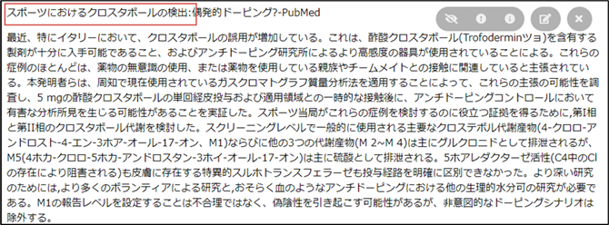
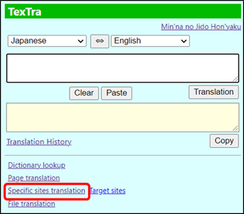
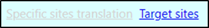
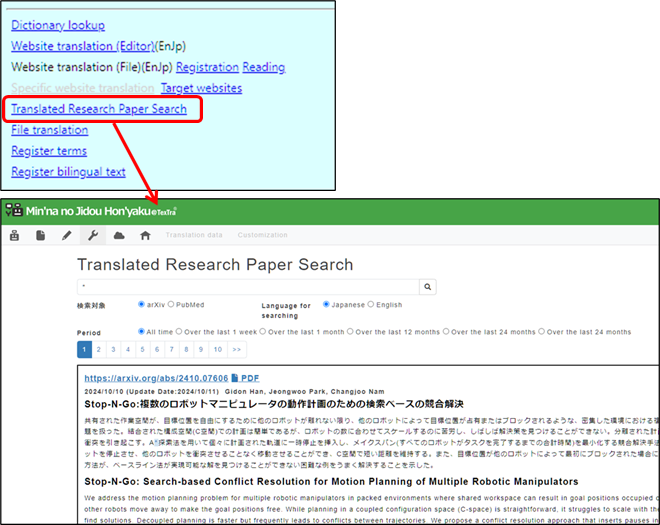

Specific website translation
It is translated important parts on the specific websites
rapidly.

Showing the target site and
TexTra
button > Specific website translation

The link gets
inactive when the showing site is not target of this function.

The
target sites are added by the requests from users and so on.
・ Translated Research Paper
Search
Open "Translated Research Paper Search" in the
site.
You can search translation results for target
sites.
